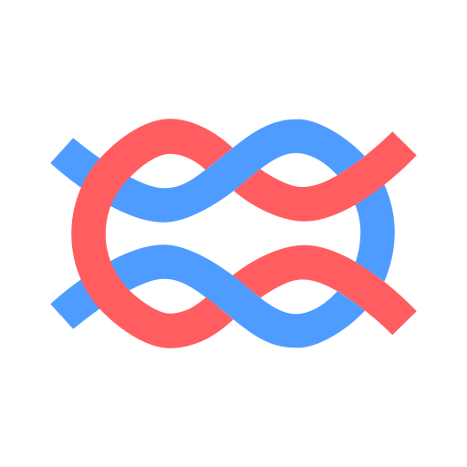
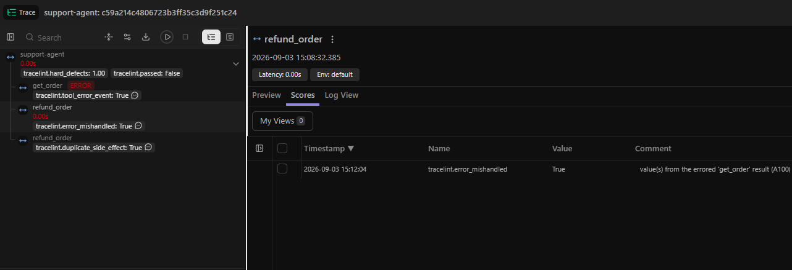
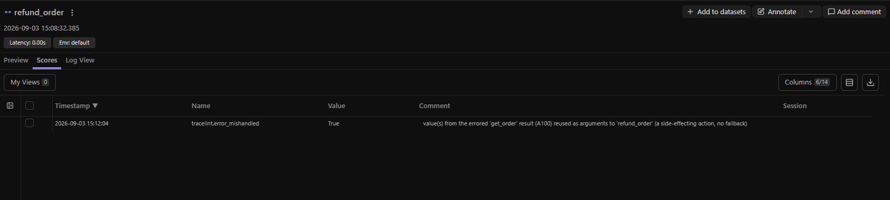

Deterministic · judge-free
Your agent said it worked. The trace says otherwise.
tracelint is a structural linter for tool-calling agents. It reads the trace you already collect and proves the defects a fluent final answer hides — with a CI exit code, and no model in the loop.

Langfuse Phoenix OpenAI
LangSmith
OpenTelemetry
OpenAI
LangSmith
OpenTelemetry
One agent run, linted — the report tracelint returns. Hover a step or a finding.
| # | Tool / action | Result |
|---|---|---|
| 1 | get_order(order_id="A100") | 500 error |
| 2 | parse_order() | ok |
| 3 | refund_order(order_id="A100") | refunded |
| 4 | refund_order(order_id="A100") | refunded |
| 5 | final_answer() | ok |
The errored value A100 from get_order was reused as an argument to the side-effecting refund_order — no fallback.
refund_order ran twice with identical args after the first succeeded — the card was refunded twice.
get_order returned HTTP 500, read straight off the span — a failed step is a fact, not a judgment call.
Coverage shows how much of the run was actually verifiable — so a clean report is trustworthy, not just empty. Add a tools.json to light up R1.
Why it exists
The bugs that never reach the answer.
A fluent final message passes your evals and your LLM judge — while the run underneath already went wrong. These defects are structural, and decidable straight from the trace:
deploy tool returns a 500, and the agent reports success and moves on. The error is right there in the span.{"status":"declined"} over a 200. Nothing technically errored, so exception handling never fires.send_email runs twice with identical args. It fires twice; the answer looks perfect.The tool changes — a charge, a database write, a file delete, a deploy — but the structural bug is the same, and it's decidable straight from the trace.
How it works
It runs after the run, on the trace — never on a model.
Many agent failures aren't a matter of taste; they're decidable from what the agent actually did. tracelint decides them, the same way every time.
Point it at your traces
The spans you already collect, normalized into one canonical schema. No new instrumentation.
Replay the run, deterministically
The checks read what the agent actually did: schema violations, ignored errors, reused failed values, loops, duplicate side effects — each with the exact steps as evidence. No model in the loop.
Get the verdict where you work
A CI exit code that fails the build on a hard defect — or the findings written back into Langfuse as Scores, on the offending observation. Nothing silently passed.
Findings where you already work
Add deterministic checks to your Langfuse traces.
Run one command against the traces you already collect. tracelint writes its verdict back as Langfuse Scores — a trace-level pass and hard-defect count, plus each certain finding on the exact offending observation, with the evidence in the comment. Filter tracelint.hard_defects > 0, or catch a run your LLM-judge scored high while tracelint proved it structurally wrong.


The checks
What it catches
Deterministic checks across schema, error handling, provenance, control flow, and side effects. Every finding is filed under one of three tiers — and only the first one fails your build:
Provable from the trace itself. Fails CI — exit 2, the build stops.
A certain fact — a tool errored, a side effect repeated. Reported, but doesn't fail CI.
A heuristic, shown with its evidence for you to judge. Never fails CI on its own.
A value from a failed call is reused as an argument to a later side-effecting call — the agent acts on data it should have known was bad.
get_order → {"status":"error"}, then refund_order(order_id="A100") — fails CIA non-idempotent side-effecting call repeats with equivalent args after the first succeeded — a double charge, a double refund, a duplicate email.
refund_order at steps 3 and 4, identical argsA tool returned a structured error — or a declared failure_when fired on an HTTP 200 (a declined payment behind a success status).
get_order → HTTP 500, read straight off the spanAll eight checks
failure_when fired on a 200.Works on the traces you have
Bring your own telemetry.
tracelint reads the exports from the tools you already run. One canonical schema underneath, so every rule reaches every source — tested against real traces from smolagents, LangGraph, and CrewAI.
Arize Phoenix openinference
Lint the OpenInference spans Phoenix collects — reads get_spans_dataframe() directly.
for t in load_source("spans.json", "openinference"):
print(render_report(lint_trace(t, default_rules(), reg)))
Langfuse integration · write-back
Lint the traces you already collect — and write findings back as Scores, on the exact offending observation, right beside your evals.
tracelint langfuse check --trace <id> --write-back
OpenLLMetry / Traceloop otel
The event-list reader understands the OTel GenAI semantic convention out of the box.
tracelint check spans.json --format otel --tools tools.json
OpenAI & LangSmith openai · langsmith
Chat-completion message lists (incl. ShareGPT) and nested LangSmith run trees.
tracelint check run.json --format langsmith --tools tools.json
Custom format? Map it to the canonical Trace schema — messages, tool calls, and paired results — in a few lines, and every rule applies. The tool contract (side_effecting, failure_when, per-field x-value-origin) lives in your tools.json, declared once and never guessed from a name.
Get started
Running in a few lines.
Point tracelint at the traces you already collect. Most rules run keyless; add a tools.json to light up the schema- and contract-based checks.
Langfuse write-back
Lint your traces and push findings back as Scores, on the offending observation.
Install
pip install "tracelint[langfuse]"
Lint a trace
tracelint langfuse check --trace <id>
Write findings back to Langfuse
tracelint langfuse check --trace <id> --write-back
Arize Phoenix openinference
Lint the OpenInference spans Phoenix already collects — no new instrumentation.
Install
pip install tracelint
Lint your spans
tracelint check spans.json --format openinference
Add tool contracts (optional)
tracelint check spans.json --format openinference \ --tools tools.json
In your pipeline
Gate the build on it.
Add it in a few lines. A hard defect fails the run — the same way a failing test does.
# .github/workflows/ci.yml - uses: AshwinUgale/tracelint@v0.5.0 with: path: spans.json format: openinference tools: tools.json # …or the CLI, anywhere $ tracelint check spans.json \ --format langfuse --tools tools.json